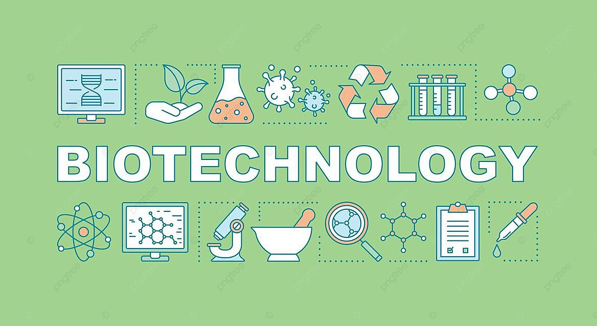

La ciencia ha avanzado a pasos agigantados en las últimas décadas. Desde la exploración del espacio hasta la investigación en biotecnología, los científicos están haciendo descubrimientos que cambian nuestra comprensión del mundo.
La tecnología ha transformado nuestras vidas. Desde la inteligencia artificial hasta la computación cuántica, las innovaciones tecnológicas están redefiniendo lo que es posible.
La ciencia y la tecnología son fundamentales para el progreso de la humanidad. Es crucial seguir apoyando la investigación y la innovación para enfrentar los desafíos del futuro.